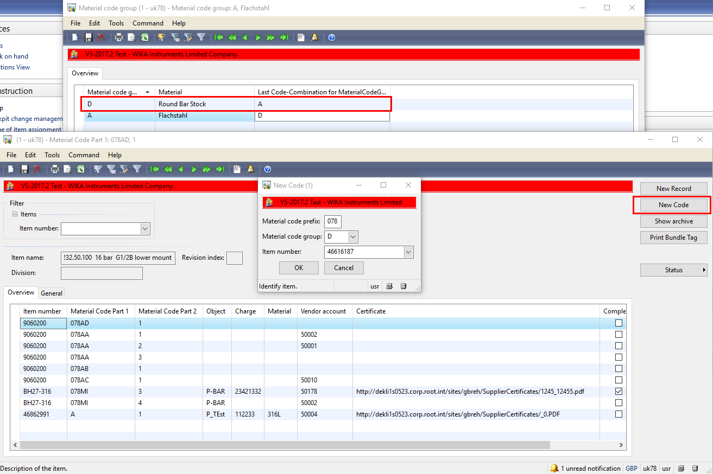
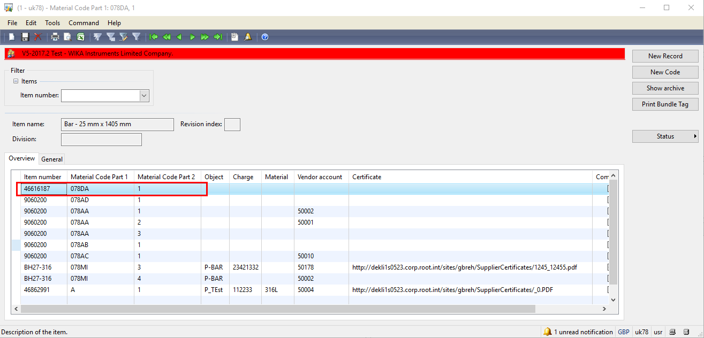
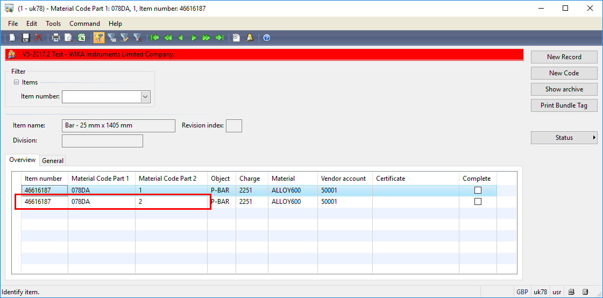
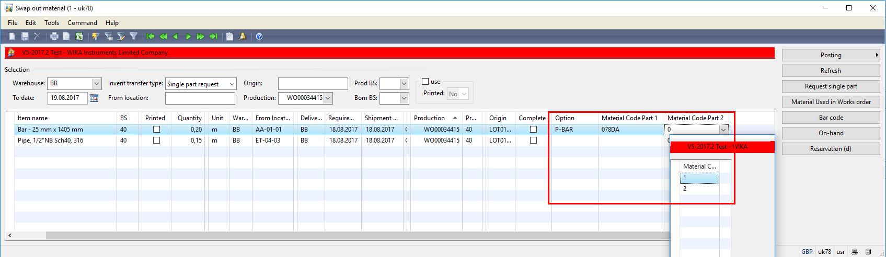

Creating a new Code
When a new product is received, user should open the form “Material Code” (Stock Management -> MaterialCode -> Material Code) and click button New Code Insert a Material Code Group and Item number

In the example, the Material code group is “D” and for it, the last used combination is A. That means system will create a new entry for the selected item number with “Material Code 1” as XXXDA and “Material Code 2” as 1.

Note
The XXX part of “Material Code 1” represents the company number and it is configured under:
Production -> Certificate -> Setup -> Parameters
Important
The certificates should be saved on SER System.
Creating a new record
When a product is received and it belongs to same batch used in a previous shipment, user should open the form “Material Code” (Stock Management -> MaterialCode -> Material Code), select the previous register in grid and click button New Record System will create a new entry with same data as the selected register and increases the “Material Code Part 2”

Assign a material code to a Work Order
Swap out material form
When user opens the Swap out Material form, D365 will pre-select a material code based on item number.

Possibility 1
If the requested quantity is within on Material Code only, user might select the Material Code parts 1 & 2 direct in the grid as showed in above picture
Possibility 2
If the requested quantity need more than one Material Code, user should click button Material Used in Works Order and individually assign the Material Codes for the Work Order
Possibility 3
Assign the Material Code individually per serial number click button Material Used in Works Order and individually assign the Material Codes for the Work Order. Select one material code and click tab Assignment Serial No to Material Code
Assign the serial number by double click them in “Serial Number” area
Work Order Detail Form
To access the Material Used in Work Order form, user should click button Inquiries -> Material Used in Work Order
Follow process described in Possiblity 2 and Possibility 3.
Stock Management Area
User could access directly the Material Used in Work Order form in Stock Management -> MaterialCode -> Material Used in Works Order
Assign a Material Code to Sales Order
Stock Management -> MaterialCode -> Material Used in Sales Order
User should insert manually all data regarding: Sales Order, Sales Order Line, Item Number and the Raw material code
Index
| Index | Status | Date | Author | Reason for change |
|---|---|---|---|---|
| 01 | Released | TBD | Simon Berberich | Publication |